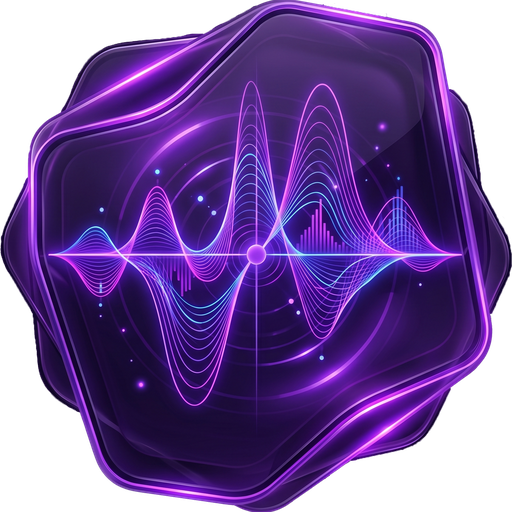
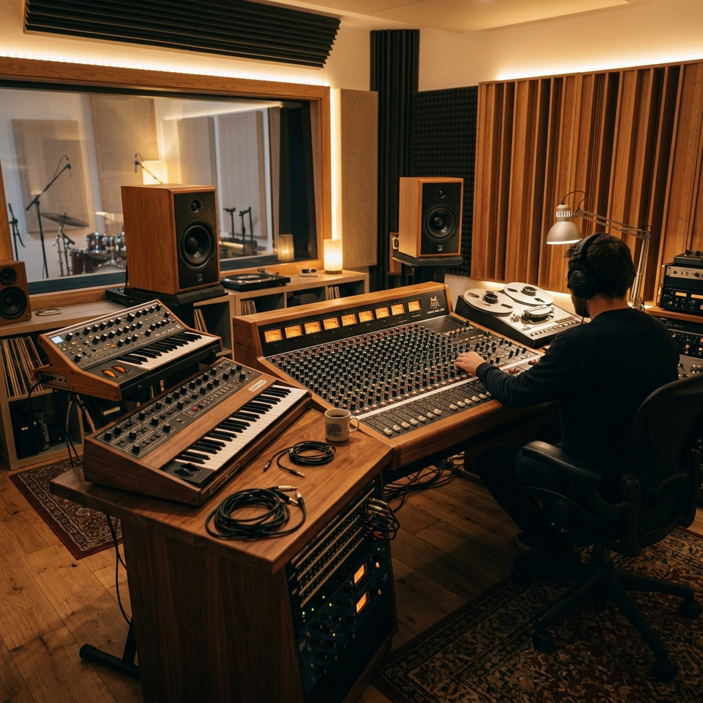
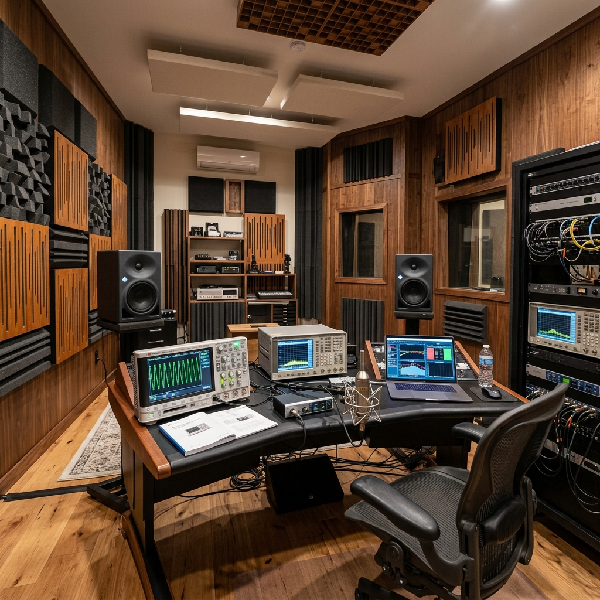
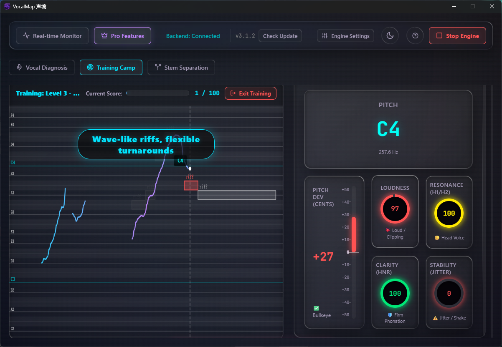
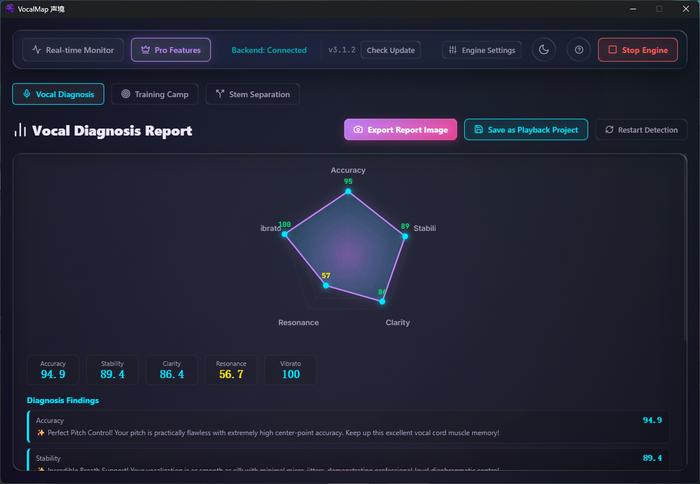
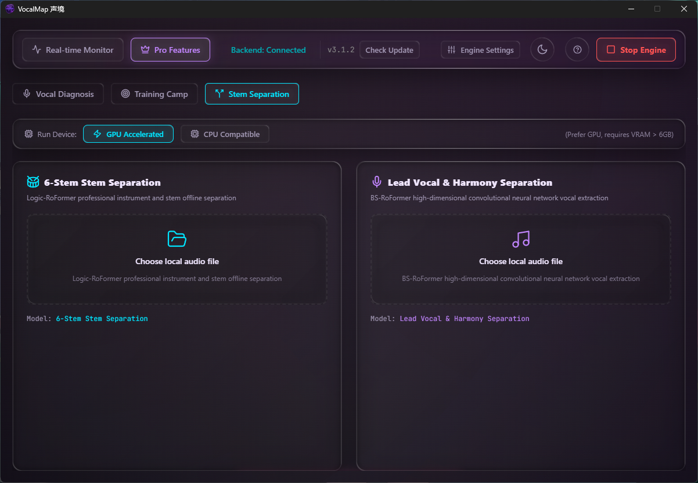
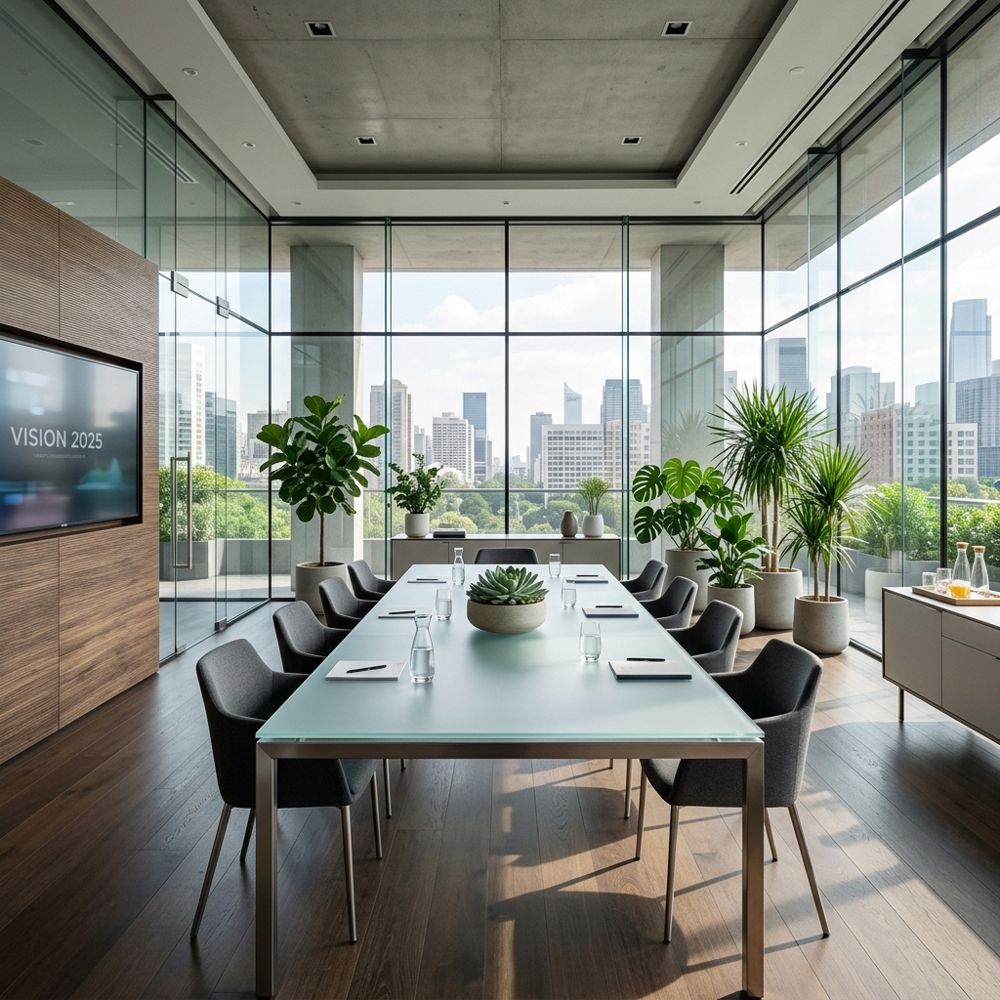

搭载 SOTA 级 AI 分离网络与声学引擎，100% 本地运算的桌面级声乐诊断工作站。

突破性的深度学习模型与毫秒级延迟补偿，彻底颠覆传统的声乐分析流。
动态生成极具针对性的 6 大渐进式声学练声关卡。配备 3 秒动态预判运镜 (Look-ahead Camera)。

利用高性能 YIN 音高追踪变体与 H1-H2 共鸣度评估。毫秒级抓取颤音 (Vibrato) 并独立评分。

搭载 SOTA 级别 BS-RoFormer 与 Logic-RoFormer 深度学习模型，纯本地算力超清分离。

全局死锁黄金比例窗口 (1200x800)。独立工作区无缝流转，弹窗式 OTA 无感升级。
重构进程通信网络，彻底阻断第三方越权调用，保护麦克风数据及显卡算力。
➜ ~ vocalmap --start-daemon
[INFO] Initializing Audio Engine...
[INFO] Generating dynamic port for secure IPC...
[SUCCESS] Port isolated & bound to 127.0.0.1:48392
[INFO] Enforcing internal API Token handshake...
[SUCCESS] Token generated: VMAP-Sec-******
[INFO] Validating algorithmic signatures and clock sync...
[SUCCESS] Security Gateway active. AI Models ready.
_

首次使用自动从国内高速镜像部署底层模型，极致压榨硬件算力。
本项目采用 PolyForm Noncommercial License 1.0.0 许可协议授权。任何组织或个人未经书面商业许可，不得将本项目、代码或编译产物用于任何商业目的。
软件内置的安全校验（动态 API 令牌、随机端口绑定等）为法定的“技术保护措施”。任何避开、破坏技术保护措施或对破解版进行二次分发的行为均属违法，将保留 DMCA 强制下架及追究民事与刑事责任的全部权利。